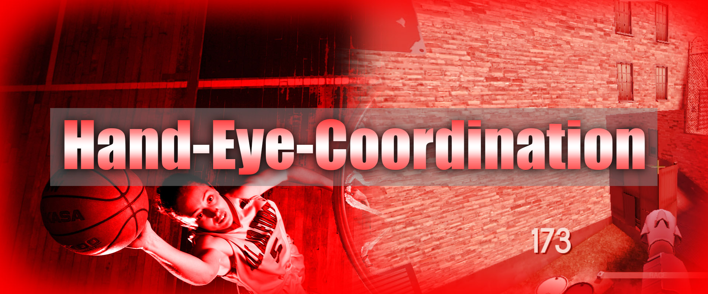

What do both sports and videogames have in common? For starters both are enjoyable when playing with more than one person while breaking a sweat. Additionally, both can be enjoyable when there is money on the line while thousends of people watch on either television or mobile devices. That's right, videogames can be taken just as serious as a physical sports games as the rise of E-Sports has been slowly been increasing in popularity as channels such as ESPN has broadcasted videogames on live television where physical sports such as Football and Basketball games is also broadcasted. But what makes videogames have the ability to have a spotlight to present itself professionally on TV just like sports? Both share a general element called Game Sense. Game Sense is an element when engaging in a competition that forces a conpetitor to think strategicly whether alone or with a team while quickly adapting to gain an edge in order to gain advantage over the opponent in order to win.
Game Sense can be broken down into 4 general factors that contribute to one another that create game sense inside the mind of a competitor. These factors are:



Click on any banner to continue.